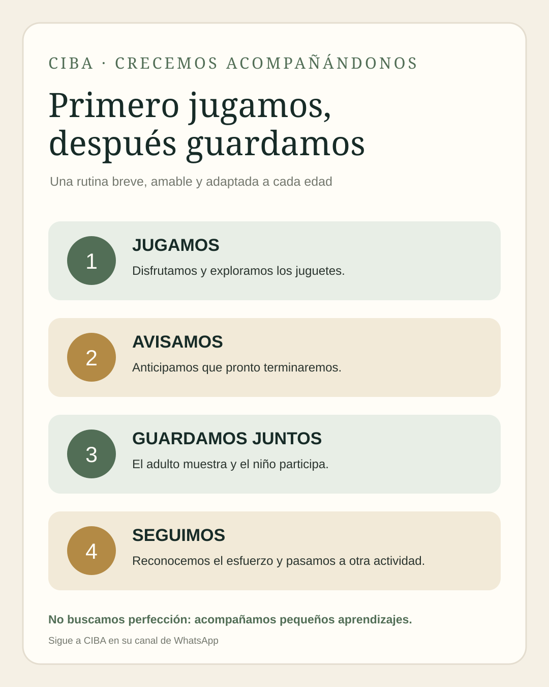

Durante los primeros mil días no buscamos una habitación perfectamente ordenada. Queremos que el niño descubra, poco a poco, que también puede participar en el cuidado de aquello con lo que disfruta jugando.
1. ¿Cuándo puede comenzar a ayudar?
Desde muy pequeño, el niño observa a quienes lo cuidan. Más adelante imita gestos y participa en acciones sencillas. Las edades son orientativas: no son fechas límite ni requisitos que deban cumplirse para considerar que un niño se desarrolla bien.
2. Enseñar con el ejemplo, no con órdenes repetidas
La mejor manera de comenzar es hacer juntos lo que esperamos que el niño aprenda.
- Avisar: «Dentro de un ratito vamos a guardar».
- Mostrar: el adulto toma un juguete y lo coloca en su sitio.
- Invitar: «¿Me ayudas con este bloque?».
- Acompañar: ayudar si todavía no sabe cómo hacerlo.
- Reconocer: valorar su participación con palabras sencillas: «Lo llevaste a la cesta».
No hace falta que recoja todos los juguetes. Una sola acción puede ser suficiente para comenzar. La repetición cotidiana enseña más que una orden pronunciada muchas veces.
3. Organizar el espacio facilita el aprendizaje
Es difícil guardar algo cuando no sabemos dónde va o el lugar está fuera de nuestro alcance. Un sistema sencillo puede ayudar:
- Una cesta o caja para bloques grandes.
- Un recipiente para muñecos y animales.
- Un lugar bajo para los cuentos.
- Una caja para carritos.
- Un sitio separado para piezas pequeñas que no deben quedar al alcance de bebés.
No necesitamos comprar organizadores. Cajas resistentes y cestas reutilizadas pueden servir si están limpias, son estables y no tienen grapas, bordes cortantes ni partes que se desprendan. No es necesario sacar todos los juguetes a la vez: alternarlos puede facilitar la recogida.
4. Convertir la recogida en un juego
A estas edades, el juego es una forma natural de aprender. Podemos decir:
- «¿Dónde duerme este osito?».
- «Vamos a llevar los bloques a su casa».
- «¿Puedes poner este carrito junto a los otros?».
- «Yo guardo uno y tú guardas otro».
También podemos cantar una canción breve o inventar una historia en la que cada juguete regresa a su lugar. La actividad debe ser corta, agradable y adaptada a la atención del niño.
5. ¿Qué hacemos cuando no quiere guardar?
Es normal que a veces no quiera interrumpir el juego. Puede estar cansado, concentrado o no comprender todavía lo que esperamos. En lugar de discutir:
- Anticipa que el juego terminará pronto.
- Ofrece una elección sencilla: «¿Guardamos primero los bloques o los cuentos?».
- Empieza tú y permite que se incorpore.
- Reduce la cantidad de juguetes que debe recoger.
- Si está cansado o molesto, ayúdalo y vuelve a intentarlo otro día.
6. La seguridad también forma parte del orden
- Retira del alcance de los bebés las piezas pequeñas que puedan provocar atragantamiento.
- Guarda por separado los juguetes destinados a niños mayores, con piezas pequeñas o imanes.
- Mantén pilas de botón y baterías sueltas fuera del alcance infantil.
- Revisa juguetes rotos, bordes afilados y piezas que puedan desprenderse.
- Evita cajas con tapas pesadas que puedan caer o atrapar dedos.
- No permitas que el niño se suba a muebles o estanterías para alcanzar juguetes.
- Mantén los juguetes lejos de medicamentos y productos de limpieza.
Respeta la edad indicada por el fabricante y supervisa el juego. En menores de tres años, las piezas pequeñas representan un riesgo especial.
7. ¿Y si vivimos en una casa pequeña?
No todas las familias disponen de una habitación infantil ni de muebles especiales. En muchos hogares cubanos, el niño juega en la sala, el portal o un espacio compartido. Podemos:
- Reservar una cesta para los juguetes de uso diario.
- Usar una caja resistente que pueda guardarse debajo de una mesa.
- Mantener los cuentos en un lugar accesible.
- Recoger una pequeña cantidad después de cada momento de juego.
- Separar los juguetes deteriorados o que ya no se utilizan.
No hace falta que cada juguete tenga una etiqueta. Lo importante es que el niño pueda reconocer dónde se guarda y que el adulto mantenga una organización sencilla y estable.
8. ¿Cuándo debemos consultar?
No guardar juguetes por sí solo no constituye una señal de retraso del desarrollo. La participación depende de la edad, la comprensión del lenguaje, la coordinación, el interés y las oportunidades del entorno.
Conviene conversar con el pediatra si hay inquietudes más amplias: pérdida de habilidades que ya realizaba, dificultades importantes para manipular objetos cotidianos, escaso interés por explorar o interactuar, o dificultades persistentes de comunicación y comprensión. No utilices la capacidad de ordenar como prueba diagnóstica ni compares a unos niños con otros.
9. Una rutina breve para probar en familia
Antes de terminar, avisa que pronto van a recoger. Al finalizar, elijan una sola categoría de juguetes. Muestra cómo guardarla e invita al niño a participar. Reconoce el esfuerzo y pasa a la siguiente actividad. No importa si el adulto termina guardando la mayor parte: la participación del niño ya tiene valor.
Recursos prácticos para las familias
Recurso 1 · Organizador visual adaptable
Elige el espacio disponible y el tipo de juguetes. La guía propone una organización sencilla sin necesidad de comprar muebles.
Recurso 2 · Juego «¿Dónde vive cada juguete?»
Elige dónde guardar cada objeto. Es un juego para conversar y practicar; no es una prueba del desarrollo.
Elige el lugar que corresponde.
Para bebés pequeños, adapta el juego a explorar objetos grandes y seguros con el adulto; no es necesario clasificar por categorías.
Recurso 3 · Secuencia visual «Primero jugamos, después guardamos»
Una secuencia de cuatro pasos para anticipar la rutina y colocar en un lugar visible.


Recurso 4 · Tarjetas imprimibles
Imprime, recorta y utiliza las tarjetas para modelar pequeñas acciones. No son órdenes: son invitaciones a participar.
Recurso 5 · Diario de pequeños logros
Registra observaciones de la semana. Es opcional y permanece guardado en este dispositivo. No incluye nombres ni datos clínicos.
El registro es privado y opcional. No se envía a CIBA ni a ningún servidor.
Una idea para recordar
Un niño no aprende a cuidar sus cosas porque alguien se lo repita muchas veces. Aprende cuando observa, participa, prueba y encuentra adultos que le enseñan con paciencia.
No buscamos una casa perfecta ni juguetes siempre ordenados. Buscamos pequeñas oportunidades para desarrollar autonomía, colaboración y cuidado del entorno.
Fuentes para ampliar
- Centers for Disease Control and Prevention (CDC). Milestones by 18 Months. Indicadores del desarrollo e imitación de tareas domésticas. Consultar.
- National Association for the Education of Young Children (NAEYC). Growing Independence: Tips for Parents of Toddlers and Twos. Consultar.
- Harvard University, Center on the Developing Child. A Guide to Serve & Return. Consultar.
- CDC. Tips for Relying on Routines and Rules. Consultar.
- U.S. Consumer Product Safety Commission (CPSC). Toys: Safety Education. Consultar.
- American Academy of Pediatrics. How to Buy Safe Toys. Consultar.